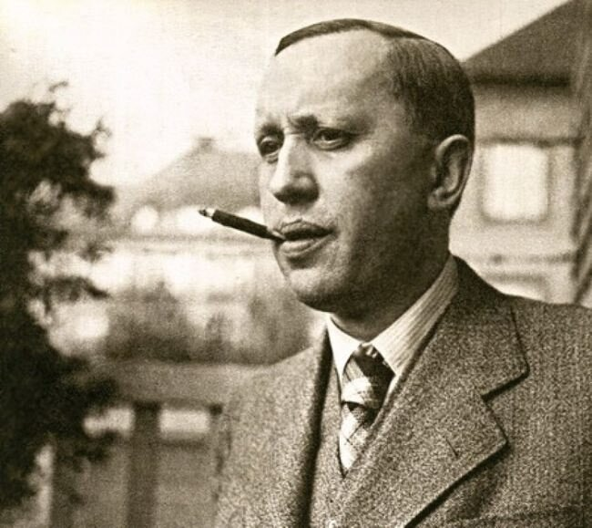

TÁC GIẢ

Karel Čapek (karɛl ˈtʃapɛk)
(09/01/1890 – 25/12/1938)
là nhà văn người Séc lừng danh đầu thế kỷ XX. Ông là người đa tài trong nhiều lĩnh vực như nhà viết kịch, nhà soạn kịch, nhà viết tiểu luận, nhà xuất bản, nhà phê bình văn học, nhiếp ảnh gia và nhà phê bình nghệ thuật. Tuy vậy, ông nổi tiếng nhiều nhất là nhờ mảng văn chương khoa học viễn tưởng gồm cuốn tiểu thuyết Khi loài vật lên ngôi và vở kịch R.U.R. (Các Robot Toàn năng của Rossum), lần đầu tiên giới thiệu từ robot. Ông cũng viết nhiều tác phẩm mang tính chính trị liên quan đến những xáo trộn xã hội trong thời đại mình. Phần lớn đều chịu ảnh hưởng bởi chủ nghĩa tự do thực dụng kiểu Mỹ, ông ra sức vận động ủng hộ tự do ngôn luận và khinh miệt hoàn toàn sự trỗi dậy của chủ nghĩa phát xít và chủ nghĩa cộng sản ở châu Âu.

Čapek từng được đề cử bảy lần cho Giải Nobel Văn học, nhưng ông chưa bao giờ thắng cử. Tuy nhiên, một số giải thưởng được đặt theo tên của ông, như giải thưởng Karel Čapek, được Câu lạc bộ PEN của Séc trao thưởng hằng năm cho tác phẩm văn học góp phần tăng cường hoặc duy trì các giá trị dân chủ và nhân văn trong xã hội. Ông cũng là một nhân vật quan trọng trong việc thành lập Câu lạc bộ PEN Tiệp Khắc như là một phần của PEN Quốc tế. Ông đã chết trong Thế Chiến II do hậu quả của bệnh tật suốt đời.
Theo Wikipedia (tiếng Việt).